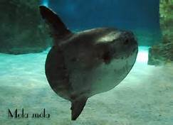

Il pesce luna
Il pesce luna (Mola mola dal latino mola, "macina, mola") è il più grande tra i pesci ossei (gli squali sono, invece, pesci cartilaginei). In inglese viene chiamato sunfish, presumibilmente tanto per la sua forma, quanto per le sue dimensioni e per il fatto che durante le giornate di sole tende a salire alla superficie dell'acqua.
I pesci luna sono i pesci ossei più pesanti e gli esemplari più grandi possono raggiungere un'altezza di 4,2 metri, 3 metri di lunghezza e circa 2.268 chilogrammi, superati in alcuni casi da squali e mante, che appartengono però alla classe dei cartilaginei. Questo pesce è caratterizzato da una forma allungata, ovaloide, molto compressa ai fianchi. La pinna caudale è formata da un'escrescenza carnosa (che parte dalla radice della pinna dorsale), la quale ha poca mobilità: la locomozione è affidata alle pinne dorsale e anale, opposte, simmetriche, robuste e allungate. La pinna pettorale è piccola e a ventaglio. I denti sono fusi tra loro nella piccola bocca e formano una sorta di becco. Le aperture branchiali sono ridotte ad un buco, appena prima della pinna pettorale. La sua pelle può raggiungere lo spessore di 15 cm. Essa ospita fino a cinquanta specie di parassiti e microorganismi, i quali possono provocare il fenomeno della bioluminescenza. Si tratta inoltre di un pesce estremamente longevo: si ritiene che possa superare ampiamente i cento anni di età.